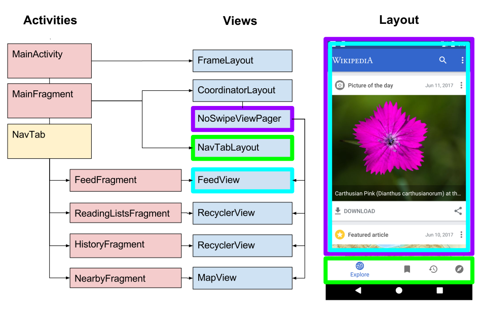
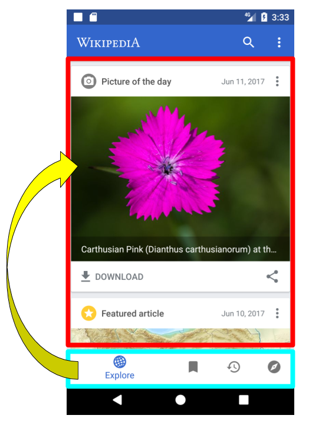
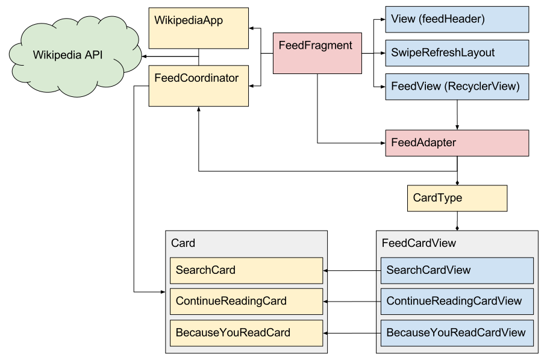
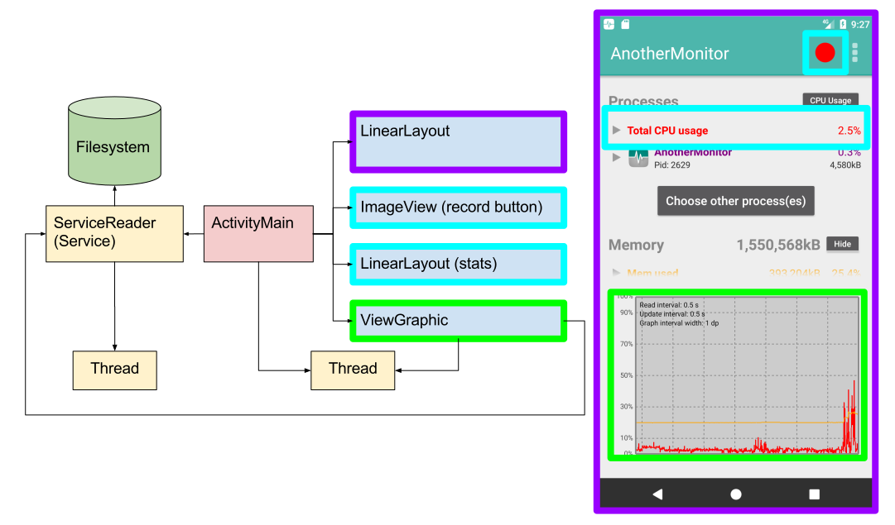
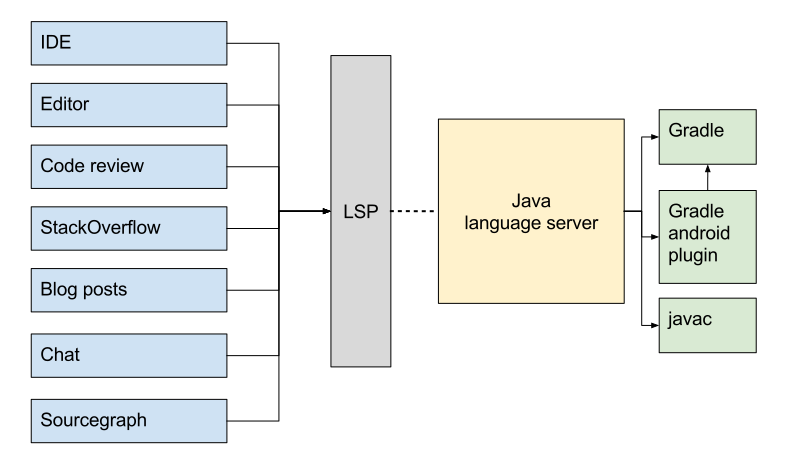

class: center, middle # Become a better Android developer ## with examples and patterns from open source <h3><a href="https://beyang.github.io/gradle-summit-2017">beyang.github.io/gradle-summit-2017</a></h3> ??? [example pull request](https://github.com/wikimedia/apps-android-wikipedia/pull/10/files) * Intro: 2 min * Wikipedia: 20 min * AnotherMonitor: 5 min * AntennaPod: 10 min * Gradle and code understanding tools: 5 min --- # About me * [@beyang](https://twitter.com/beyang) * CTO, [Sourcegraph](https://sourcegraph.com/) ??? Sourcegraph * code understanding tool * code search and browsing * indexes all of open source, makes it easy to dive in Tell me about you (audience): * How many are Android newbies? * How many people are experienced Android developers? * How do you feel about the quality of your Android codebase? --- class: center <br><br><br><br><br><br> ### When was the last time you had to understand a large chunk of code that you didn't write? -- ### Did you enjoy it? ??? We don't take full advantage of the amazing corpus of open-source code that's available. --- # How to learn from examples > ### Process for understanding existing code > ### Actual code examples from open source > ### Tool for accelerating the process --- class: center,middle # This talk is special. --- # 3 codebases -- * 2,500 GitHub stars -- * 1,000+ Java files -- * 140,000 lines of code -- * 10,0000 commits -- <br> <center> <h1><em>None of which I wrote</em></h1> <h3>¯\_(ツ)_/¯</h3> </center> ??? At the end, we'll talk about how Gradle can be a foundational building block for tools for understanding code, not just building and packaging it. --- # 3 apps <img src="images/feed.png" style="width: 32%"> <img src="images/monitor/main.png" style="width: 32%"> <img src="images/pod/main.png" style="width: 32%"> <center> Wikipedia AnotherMonitor AntennaPod </center> --- ## Android by example <table><tr style="vertical-align: top;"> <td style="padding-right: 3em"> <h4>Architecture</h4> <ul> <li>Model-view-controller</li> <li>Adapters</li> <li>Callbacks and listeners</li> <li>Backend services</li> </ul> <h4>Libraries</h4> <ul> <li><code class="remark-inline-code">Butterknife</code> view-logic binding</li> <li><code class="remark-inline-code">OkHttp</code> (HTTP client)</li> <li><code class="remark-inline-code">Retrofit</code> (REST API clients)</li> </ul> <h4>Backend</h4> <ul> <li><code class="remark-inline-code">Service</code></li> <li>SQLite</li> <li>CPU and memory stats</li> <li>Filesystem</li> </ul> </td> <td> <h4>Views</h4> <ul> <li>Navigation drawer</li> <li>Bottom navigation tabs</li> <li>View pager</li> <li><code class="remark-inline-code">RecyclerView</code></li> <li><code class="remark-inline-code">MapView</code></li> <li><code class="remark-inline-code">TextureView</code></li> <li>"Sticky" playback view</li> </ul> <h4>Other</h4> <ul> <li>Audio playback</li> <li>Threading</li> <li>Mapping enums to ints</li> </ul> </td> </tr> </table> --- # App #1: [Wikipedia](https://sourcegraph.com/github.com/wikimedia/apps-android-wikipedia) <img src="images/feed.png" alt="Wikipedia app" style="width: 32%"> <img src="images/lists.png" alt="Wikipedia app" style="width: 32%"> <img src="images/nearby.png" alt="Wikipedia app" style="width: 32%"> ??? It's a way to browse Wikipedia. --- ## Wikipedia backbone  ??? Both standard usage patterns And things of interest --- class: center <br><br><br><br><br><br> ## How do we discover the backbone? -- ## Ask: "What does this app do on initialization?" --- ### Wikipedia: how does it arrive at its initial state? <center> <img src="images/feed.png" alt="Wikipedia app" style="width: 40%"> </center> --- ### Wikipedia: where's the "main" function? Looking for something like: ```java public class MainActivity { public void onCreate(Bundle savedInstanceState) { ... } } ``` ??? * Android apps revolve around "activities." * Main activity is called `MainActivity`. * `onCreate` and `onCreateView` are initializers. -- Search for the main activity class: [](https://sourcegraph.com/github.com/wikimedia/apps-android-wikipedia@8857c36d6a4ed4c106086d3436c2e3a4afd08f8c/-/blob/app/src/main/java/org/wikipedia/main/MainActivity.java#L13:14-13:26) --- ### Where is MainActivity.onCreate? <a href="https://sourcegraph.com/github.com/wikimedia/apps-android-wikipedia@edb0a841475606613ea4f6c3a4cda2d34c62b4e0/-/blob/app/src/main/java/org/wikipedia/main/MainActivity.java#L13-14"> ```java public class MainActivity extends SingleFragmentToolbarActivity<MainFragment> { ... } ``` </a> <center><em>jump to superclass</em></center> <a href="https://sourcegraph.com/github.com/wikimedia/apps-android-wikipedia@edb0a841475606613ea4f6c3a4cda2d34c62b4e0/-/blob/app/src/main/java/org/wikipedia/activity/SingleFragmentToolbarActivity.java#L15:23"> ```java public abstract class SingleFragmentToolbarActivity<T extends Fragment> extends SingleFragmentActivity<T> { ... } ``` </a> <center><em>jump to superclass</em></center> <a href="https://sourcegraph.com/github.com/wikimedia/apps-android-wikipedia@edb0a841475606613ea4f6c3a4cda2d34c62b4e0/-/blob/app/src/main/java/org/wikipedia/activity/SingleFragmentActivity.java#L14:23"> ```java public abstract class SingleFragmentActivity<T extends Fragment> extends ThemedActionBarActivity { @Override public void onCreate(Bundle savedInstanceState) { super.onCreate(savedInstanceState); setContentView(getLayout()); if (!isFragmentCreated()) { addFragment(createFragment()); } } ``` ??? Walk up inheritance tree: * No `MainActivity.onCreate` * Inheritance tree * `FragmentManager` * `createFragment()` --- ### What does onCreate do? <a href="https://sourcegraph.com/github.com/wikimedia/apps-android-wikipedia@edb0a841475606613ea4f6c3a4cda2d34c62b4e0/-/blob/app/src/main/java/org/wikipedia/main/MainActivity.java#L20-23"> ```java public class MainActivity extends SingleFragmentToolbarActivity<MainFragment> implements MainFragment.Callback { ... @Override protected MainFragment createFragment() { return MainFragment.newInstance(); } ``` </a> ??? *creates new instance of `MainFragment`* --- ### What does MainFragment.onCreateView do? `MainFragment.onCreateView` wires up the tab bar to the view pager: <a href="https://sourcegraph.com/github.com/wikimedia/apps-android-wikipedia@edb0a841475606613ea4f6c3a4cda2d34c62b4e0/-/blob/app/src/main/java/org/wikipedia/main/MainFragment.java#L101-123:6"> ```java public class MainFragment extends Fragment implements BackPressedHandler, FeedFragment.Callback, NearbyFragment.Callback, HistoryFragment.Callback, SearchFragment.Callback, LinkPreviewDialog.Callback { @BindView(R.id.fragment_main_view_pager) ViewPager viewPager; @BindView(R.id.fragment_main_nav_tab_layout) NavTabLayout tabLayout; ... @Nullable @Override public View onCreateView(LayoutInflater inflater, @Nullable ViewGroup container, @Nullable Bundle savedInstanceState) { ... View view = inflater.inflate(R.layout.fragment_main, container, false); unbinder = ButterKnife.bind(this, view); viewPager.setAdapter(new NavTabFragmentPagerAdapter(getChildFragmentManager())); tabLayout.setOnNavigationItemSelectedListener( new BottomNavigationView.OnNavigationItemSelectedListener() { @Override public boolean onNavigationItemSelected(@NonNull MenuItem item) { viewPager.setCurrentItem(item.getOrder()); return true; } } ); ``` </a> ??? MainFragment wire-up: * `createFragment() -> MainFragment` * `MainFragment.onCreateView` * "inflates" view from XML * Butterknife * `@BindView` * `Butterknife.bind` * wires up both a `ViewPager` view and a `NavTabLayout (BottomNavigationView)` view * The `ViewPager` instance gets its view from the `NavTabLayout` instance, so let's --- ### What does MainFragment.onCreateView do? `MainFragment.onCreateView` wires up the tab bar to the view pager: <a href="https://sourcegraph.com/github.com/wikimedia/apps-android-wikipedia@edb0a841475606613ea4f6c3a4cda2d34c62b4e0/-/blob/app/src/main/java/org/wikipedia/main/MainFragment.java#L101-123:6"> ```java public class MainFragment extends Fragment implements BackPressedHandler, FeedFragment.Callback, NearbyFragment.Callback, HistoryFragment.Callback, SearchFragment.Callback, LinkPreviewDialog.Callback { @BindView(R.id.fragment_main_view_pager) ViewPager viewPager; @BindView(R.id.fragment_main_nav_tab_layout) NavTabLayout tabLayout; ... @Nullable @Override public View onCreateView(LayoutInflater inflater, @Nullable ViewGroup container, @Nullable Bundle savedInstanceState) { ... View view = inflater.inflate(R.layout.fragment_main, container, false); unbinder = ButterKnife.bind(this, view); viewPager.setAdapter(new NavTabFragmentPagerAdapter(getChildFragmentManager())); tabLayout.setOnNavigationItemSelectedListener( new BottomNavigationView.OnNavigationItemSelectedListener() { @Override public boolean onNavigationItemSelected(@NonNull MenuItem item) { viewPager.setCurrentItem(item.getOrder()); return true; } } ); ``` </a> --- ### What does MainFragment.onCreateView do? `MainFragment.onCreateView` wires up the tab bar to the view pager:  --- ### But where do the tabs come from? <a href="https://sourcegraph.com/github.com/wikimedia/apps-android-wikipedia@edb0a841475606613ea4f6c3a4cda2d34c62b4e0/-/blob/app/src/main/java/org/wikipedia/main/MainFragment.java#L101:37-101:49"> ```java public class MainFragment extends Fragment implements BackPressedHandler, FeedFragment.Callback, NearbyFragment.Callback, HistoryFragment.Callback, SearchFragment.Callback, LinkPreviewDialog.Callback { ... @Nullable @Override public View onCreateView(LayoutInflater inflater, @Nullable ViewGroup container, @Nullable Bundle savedInstanceState) { ... View view = inflater.inflate(R.layout.fragment_main, container, false); ... ``` </a> `resources/fragment_main.xml`: <a href="https://sourcegraph.com/github.com/wikimedia/apps-android-wikipedia@edb0a841475606613ea4f6c3a4cda2d34c62b4e0/-/blob/app/src/main/res/layout/fragment_main.xml#L28-37"> ```xml <org.wikipedia.navtab.NavTabLayout ``` </a> <a href="https://sourcegraph.com/github.com/wikimedia/apps-android-wikipedia@edb0a841475606613ea4f6c3a4cda2d34c62b4e0/-/blob/app/src/main/java/org/wikipedia/navtab/NavTabLayout.java#L25-30:6"> ```java public class NavTabLayout extends BottomNavigationView { ... private void setTabViews() { for (int i = 0; i < NavTab.size(); i++) { NavTab navTab = NavTab.of(i); getMenu().add(Menu.NONE, i, i, navTab.text()).setIcon(navTab.icon()); } } ``` </a> --- ### Where do the tabs come from? (continued) *references* `enum NavTab` <a href="https://sourcegraph.com/github.com/wikimedia/apps-android-wikipedia@edb0a841475606613ea4f6c3a4cda2d34c62b4e0/-/blob/app/src/main/java/org/wikipedia/navtab/NavTab.java#L16-21:7"> ```java public enum NavTab implements EnumCode { EXPLORE(R.string.nav_item_feed, R.drawable.ic_globe) { @NonNull @Override public Fragment newInstance() { return FeedFragment.newInstance(); } }, READING_LISTS(R.string.nav_item_reading_lists, R.drawable.ic_bookmark_white_24dp) { @NonNull @Override public Fragment newInstance() { return ReadingListsFragment.newInstance(); } }, HISTORY(R.string.nav_item_history, R.drawable.ic_restore_black_24dp) { @NonNull @Override public Fragment newInstance() { return HistoryFragment.newInstance(); } }, NEARBY(R.string.nav_item_nearby, R.drawable.ic_explore_black_24dp) { @NonNull @Override public Fragment newInstance() { return NearbyFragment.newInstance(); } }; ``` </a> ??? NavTabLayout -> 4 tab options -> FeedFragment.newInstance --- ## Wikipedia backbone <!--------------------------- WIKIPEDIA FEED -----------------------------> --- ## Wikipedia Feed  --- ### How does the feed work? <center> <img src="images/feed.png" style="width: 32%;"> <img src="images/feed_news.png" style="width: 32%;"> <img src="images/feed_trending.png" style="width: 32%;"> </center> --- ### What does FeedFragment do on init? `FeedFragment` holds references to models and views for the feed. <a href="https://sourcegraph.com/github.com/wikimedia/apps-android-wikipedia@8857c36d6a4ed4c106086d3436c2e3a4afd08f8c/-/blob/app/src/main/java/org/wikipedia/feed/FeedFragment.java#L44:14-44:26"> ```java public class FeedFragment extends Fragment implements BackPressedHandler { @BindView(R.id.feed_swipe_refresh_layout) SwipeRefreshLayout swipeRefreshLayout; @BindView(R.id.fragment_feed_feed) FeedView feedView; @BindView(R.id.fragment_feed_header) View feedHeader; private FeedAdapter<?> feedAdapter; private WikipediaApp app; private FeedCoordinator coordinator; private FeedFunnel funnel; private final FeedAdapter.Callback feedCallback = new FeedCallback(); private FeedScrollListener feedScrollListener = new FeedScrollListener(); private OverflowCallback overflowCallback = new OverflowCallback(); ... @Nullable @Override public View onCreateView(LayoutInflater inflater, @Nullable ViewGroup container, @Nullable Bundle savedInstanceState) { ... View view = inflater.inflate(R.layout.fragment_feed, container, false); unbinder = ButterKnife.bind(this, view); feedAdapter = new FeedAdapter<>(coordinator, feedCallback); feedView.setAdapter(feedAdapter); feedView.setCallback(feedCallback); feedView.addOnScrollListener(feedScrollListener); ... ``` </a> ??? * Views: `SwipeRefreshLayout`, `FeedView`, feed header * Adapters: `FeedAdapter` * Callbacks and listeners * Other classes (models and data sources): `WikipediaApp`, `FeedCoordinator` * Butterknife usage again --- ### Where does FeedView get its cards? <a href="https://sourcegraph.com/github.com/wikimedia/apps-android-wikipedia@8857c36d6a4ed4c106086d3436c2e3a4afd08f8c/-/blob/app/src/main/java/org/wikipedia/feed/FeedFragment.java#L46-47"> ```java public class FeedFragment extends Fragment implements BackPressedHandler { ... @BindView(R.id.fragment_feed_feed) FeedView feedView; ... private FeedAdapter<?> feedAdapter; ... @Nullable @Override public View onCreateView(LayoutInflater inflater, @Nullable ViewGroup container, @Nullable Bundle savedInstanceState) { ... feedView.setAdapter(feedAdapter); ... ``` </a> `FeedView` subclasses `RecyclerView`: <a href="https://sourcegraph.com/github.com/wikimedia/apps-android-wikipedia@8857c36d6a4ed4c106086d3436c2e3a4afd08f8c/-/blob/app/src/main/java/org/wikipedia/feed/view/FeedView.java#L19:14"> ```java public class FeedView extends AutoFitRecyclerView { private StaggeredGridLayoutManager recyclerLayoutManager; @Nullable private ItemTouchHelper itemTouchHelper; ``` </a> Side note: the `RecyclerView` [documentation](https://developer.android.com/reference/android/support/v7/widget/RecyclerView.html) is 13,000 words long. ??? `RecyclerView`: "a flexible view for providing a limited window into a large data set." --- ### Where are the card views created and updated? `RecyclerView` subclasses fetch data through a `RecyclerView.Adapter` subclass: <a href="https://sourcegraph.com/github.com/wikimedia/apps-android-wikipedia@edb0a841475606613ea4f6c3a4cda2d34c62b4e0/-/blob/app/src/main/java/org/wikipedia/feed/view/FeedAdapter.java#L42-47"> ```java public class FeedAdapter<T extends View & FeedCardView<?>> extends DefaultRecyclerAdapter<Card, T> { ... @Override public DefaultViewHolder<T> onCreateViewHolder(ViewGroup parent, int viewType) { return new DefaultViewHolder<>(newView(parent.getContext(), viewType)); } @Override public void onBindViewHolder(DefaultViewHolder<T> holder, int position) { Card item = item(position); T view = holder.getView(); ... ((FeedCardView<Card>) view).setCard(item); ... } ... @NonNull private T newView(@NonNull Context context, int viewType) { return (T) CardType.of(viewType).newView(context); } ... ``` </a> ??? Standard `RecyclerView` pattern: * `onCreateViewHolder`: when new child view is created * `onBindViewHolder`: as the user scrolls * child views are recycled --- ### How do we get different card view types? The type of card is determined at runtime: <a href=""> ```java public class FeedAdapter<T extends View & FeedCardView<?>> extends DefaultRecyclerAdapter<Card, T> { ... @NonNull private T newView(@NonNull Context context, int viewType) { return (T) CardType.of(viewType).newView(context); } ``` </a> Child view (card) classes satisfy common interface: <a href="https://sourcegraph.com/github.com/wikimedia/apps-android-wikipedia@edb0a841475606613ea4f6c3a4cda2d34c62b4e0/-/blob/app/src/main/java/org/wikipedia/feed/view/FeedCardView.java#L8-12:2"> ```java public interface FeedCardView<T extends Card> { void setCard(@NonNull T card); @Nullable T getCard(); void setCallback(@Nullable FeedAdapter.Callback callback); } ``` </a> --- ### How do we get different card view types? Dynamic polymorphic construction via enum type: <a href="https://sourcegraph.com/github.com/wikimedia/apps-android-wikipedia@edb0a841475606613ea4f6c3a4cda2d34c62b4e0/-/blob/app/src/main/java/org/wikipedia/feed/model/CardType.java#L22:13-22:21"> ```java public enum CardType implements EnumCode { SEARCH_BAR(0) { @NonNull @Override public FeedCardView<?> newView(@NonNull Context ctx) { return new SearchCardView(ctx); } }, CONTINUE_READING(1) { @NonNull @Override public FeedCardView<?> newView(@NonNull Context ctx) { return new ContinueReadingCardView(ctx); } }, BECAUSE_YOU_READ_LIST(2) { @NonNull @Override public FeedCardView<?> newView(@NonNull Context ctx) { return new BecauseYouReadCardView(ctx); } }, MOST_READ_LIST(3) { @NonNull @Override public FeedCardView<?> newView(@NonNull Context ctx) { return new MostReadCardView(ctx); } }, FEATURED_ARTICLE(4) { @NonNull @Override public FeedCardView<?> newView(@NonNull Context ctx) { return new FeaturedArticleCardView(ctx); } ``` </a> --- ### Where does the data for a card come from? <!-- 1 --> `FeedAdapter` gives a `Card` instance to the view. `Card`s are provided by `FeedCoordinatorBase`. <a href="https://sourcegraph.com/github.com/wikimedia/apps-android-wikipedia@edb0a841475606613ea4f6c3a4cda2d34c62b4e0/-/blob/app/src/main/java/org/wikipedia/feed/view/FeedAdapter.java#L46:27-46:43"> ```java public class FeedAdapter<T extends View & FeedCardView<?>> extends DefaultRecyclerAdapter<Card, T> { ... @NonNull private FeedCoordinatorBase coordinator; ... public FeedAdapter(@NonNull FeedCoordinatorBase coordinator, @Nullable Callback callback) { super(coordinator.getCards()); ... } ... @Override public void onBindViewHolder(DefaultViewHolder<T> holder, int position) { Card item = item(position); ... ((FeedCardView<Card>) view).setCard(item); ... ``` </a> <a href="https://sourcegraph.com/github.com/wikimedia/apps-android-wikipedia@edb0a841475606613ea4f6c3a4cda2d34c62b4e0/-/blob/app/src/main/java/org/wikipedia/views/DefaultRecyclerAdapter.java#L9:23"> ```java public abstract class DefaultRecyclerAdapter<T, V extends View> extends RecyclerView.Adapter<DefaultViewHolder<V>> { public DefaultRecyclerAdapter(@NonNull List<T> items) { this.items = items; } ... protected T item(int position) { return items.get(position); } ``` </a> --- ### Where does the data for a card come from? <!-- 2 --> `FeedAdapter` gives a `Card` instance to the view. `Card`s are provided by `FeedCoordinatorBase`. <a href="https://sourcegraph.com/github.com/wikimedia/apps-android-wikipedia@edb0a841475606613ea4f6c3a4cda2d34c62b4e0/-/blob/app/src/main/java/org/wikipedia/feed/view/FeedAdapter.java#L46:27-46:43"> ```java public class FeedAdapter<T extends View & FeedCardView<?>> extends DefaultRecyclerAdapter<Card, T> { ... @NonNull private FeedCoordinatorBase coordinator; ... public FeedAdapter(@NonNull FeedCoordinatorBase coordinator, @Nullable Callback callback) { super(coordinator.getCards()); ... } ... @Override public void onBindViewHolder(DefaultViewHolder<T> holder, int position) { Card item = item(position); ... ((FeedCardView<Card>) view).setCard(item); ... ``` </a> <a href="https://sourcegraph.com/github.com/wikimedia/apps-android-wikipedia@edb0a841475606613ea4f6c3a4cda2d34c62b4e0/-/blob/app/src/main/java/org/wikipedia/views/DefaultRecyclerAdapter.java#L9:23"> ```java public abstract class DefaultRecyclerAdapter<T, V extends View> extends RecyclerView.Adapter<DefaultViewHolder<V>> { public DefaultRecyclerAdapter(@NonNull List<T> items) { this.items = items; } ... protected T item(int position) { return items.get(position); } ``` </a> --- ### Where does the data for a card come from? <!-- 3 --> `FeedAdapter` gives a `Card` instance to the view. `Card`s are provided by `FeedCoordinatorBase`. <a href="https://sourcegraph.com/github.com/wikimedia/apps-android-wikipedia@edb0a841475606613ea4f6c3a4cda2d34c62b4e0/-/blob/app/src/main/java/org/wikipedia/feed/view/FeedAdapter.java#L46:27-46:43"> ```java public class FeedAdapter<T extends View & FeedCardView<?>> extends DefaultRecyclerAdapter<Card, T> { ... @NonNull private FeedCoordinatorBase coordinator; ... public FeedAdapter(@NonNull FeedCoordinatorBase coordinator, @Nullable Callback callback) { super(coordinator.getCards()); ... } ... @Override public void onBindViewHolder(DefaultViewHolder<T> holder, int position) { Card item = item(position); ... ((FeedCardView<Card>) view).setCard(item); ... ``` </a> <a href="https://sourcegraph.com/github.com/wikimedia/apps-android-wikipedia@edb0a841475606613ea4f6c3a4cda2d34c62b4e0/-/blob/app/src/main/java/org/wikipedia/views/DefaultRecyclerAdapter.java#L9:23"> ```java public abstract class DefaultRecyclerAdapter<T, V extends View> extends RecyclerView.Adapter<DefaultViewHolder<V>> { public DefaultRecyclerAdapter(@NonNull List<T> items) { this.items = items; } ... protected T item(int position) { return items.get(position); } ``` </a> --- ### Where does the data for a card come from? <!-- 4 --> `FeedAdapter` gives a `Card` instance to the view. `Card`s are provided by `FeedCoordinatorBase`. <a href="https://sourcegraph.com/github.com/wikimedia/apps-android-wikipedia@edb0a841475606613ea4f6c3a4cda2d34c62b4e0/-/blob/app/src/main/java/org/wikipedia/feed/view/FeedAdapter.java#L46:27-46:43"> ```java public class FeedAdapter<T extends View & FeedCardView<?>> extends DefaultRecyclerAdapter<Card, T> { ... @NonNull private FeedCoordinatorBase coordinator; ... public FeedAdapter(@NonNull FeedCoordinatorBase coordinator, @Nullable Callback callback) { super(coordinator.getCards()); ... } ... @Override public void onBindViewHolder(DefaultViewHolder<T> holder, int position) { Card item = item(position); ... ((FeedCardView<Card>) view).setCard(item); ... ``` </a> <a href="https://sourcegraph.com/github.com/wikimedia/apps-android-wikipedia@edb0a841475606613ea4f6c3a4cda2d34c62b4e0/-/blob/app/src/main/java/org/wikipedia/views/DefaultRecyclerAdapter.java#L9:23"> ```java public abstract class DefaultRecyclerAdapter<T, V extends View> extends RecyclerView.Adapter<DefaultViewHolder<V>> { public DefaultRecyclerAdapter(@NonNull List<T> items) { this.items = items; } ... protected T item(int position) { return items.get(position); } ``` </a> --- ### Where does the data for a card come from? <!-- 5 --> `FeedAdapter` gives a `Card` instance to the view. `Card`s are provided by `FeedCoordinatorBase`. <a href="https://sourcegraph.com/github.com/wikimedia/apps-android-wikipedia@edb0a841475606613ea4f6c3a4cda2d34c62b4e0/-/blob/app/src/main/java/org/wikipedia/feed/view/FeedAdapter.java#L46:27-46:43"> ```java public class FeedAdapter<T extends View & FeedCardView<?>> extends DefaultRecyclerAdapter<Card, T> { ... @NonNull private FeedCoordinatorBase coordinator; ... public FeedAdapter(@NonNull FeedCoordinatorBase coordinator, @Nullable Callback callback) { super(coordinator.getCards()); ... } ... @Override public void onBindViewHolder(DefaultViewHolder<T> holder, int position) { Card item = item(position); ... ((FeedCardView<Card>) view).setCard(item); ... ``` </a> <a href="https://sourcegraph.com/github.com/wikimedia/apps-android-wikipedia@edb0a841475606613ea4f6c3a4cda2d34c62b4e0/-/blob/app/src/main/java/org/wikipedia/views/DefaultRecyclerAdapter.java#L9:23"> ```java public abstract class DefaultRecyclerAdapter<T, V extends View> extends RecyclerView.Adapter<DefaultViewHolder<V>> { public DefaultRecyclerAdapter(@NonNull List<T> items) { this.items = items; } ... protected T item(int position) { return items.get(position); } ``` </a> --- ### Where does the model fetch the data from? <a href="https://sourcegraph.com/github.com/wikimedia/apps-android-wikipedia@edb0a841475606613ea4f6c3a4cda2d34c62b4e0/-/blob/app/src/main/java/org/wikipedia/feed/view/FeedAdapter.java#L33:54"> ```java public abstract class FeedCoordinatorBase { ... private FeedClient.Callback callback = new ClientRequestCallback(); ... private void requestCard(@NonNull WikiSite wiki) { if (pendingClients.isEmpty()) { removeProgressCard(); return; } pendingClients.get(0).request(context, wiki, currentAge, callback); } ... private void appendCard(@NonNull Card card) { int progressPos = cards.indexOf(progressCard); insertCard(card, progressPos >= 0 ? progressPos : cards.size()); } ``` </a> <a href="https://sourcegraph.com/github.com/wikimedia/apps-android-wikipedia@edb0a841475606613ea4f6c3a4cda2d34c62b4e0/-/blob/app/src/main/java/org/wikipedia/feed/FeedCoordinatorBase.java#L149:19-149:40"> ```java private class ClientRequestCallback implements FeedClient.Callback { @Override public void success(@NonNull List<? extends Card> cardList) { for (Card card : cardList) { if (!isCardHidden(card)) { appendCard(card); } } requestNextCard(wiki); } ``` </a> ??? * `requestCard` triggers remote request chain for card data * callback receives requests back and inserts data into model --- <a href="https://sourcegraph.com/github.com/wikimedia/apps-android-wikipedia@edb0a841475606613ea4f6c3a4cda2d34c62b4e0/-/blob/app/src/main/java/org/wikipedia/feed/FeedCoordinator.java#L14-36:2"> ```java class FeedCoordinator extends FeedCoordinatorBase { ... protected void buildScript(int age) { if (age == 0) { addPendingClient(new SearchClient()); addPendingClient(new AnnouncementClient()); } addPendingClient(new AggregatedFeedContentClient()); addPendingClient(new ContinueReadingClient()); ... } } ``` </a> Using [Retrofit](https://sourcegraph.com/github.com/square/retrofit/-/blob/README.md) to query REST API: <a href="https://sourcegraph.com/github.com/wikimedia/apps-android-wikipedia@edb0a841475606613ea4f6c3a4cda2d34c62b4e0/-/blob/app/src/main/java/org/wikipedia/feed/aggregated/AggregatedFeedContentClient.java#L33:14-33:41"> ```java public class AggregatedFeedContentClient implements FeedClient { @Nullable private Call<AggregatedFeedContent> call; @Override public void request(@NonNull Context context, @NonNull WikiSite wiki, int age, @NonNull Callback cb) { cancel(); UtcDate date = DateUtil.getUtcRequestDateFor(age); String endpoint = String.format(Locale.ROOT, Prefs.getRestbaseUriFormat(), wiki.scheme(), wiki.authority()); Retrofit retrofit = RetrofitFactory.newInstance(endpoint, wiki); AggregatedFeedContentClient.Service service = retrofit.create(Service.class); call = service.get(date.year(), date.month(), date.date()); call.enqueue(new CallbackAdapter(cb, wiki, age)); } ``` </a> ??? * Clients include many types of cards * Each client class offers good examples of how to query REST API * Example use of the Retrofit library. (A "type-safe HTTP client for Android" to expose a REST API as a Java interface). --- ## Things of note * Butterknife * Retrofit * `enum CardType` and `CardType.of`: dynamic polymorphic construction in enum class --- ## Wikipedia Feed <!------------ ANOTHERMONITOR SLIDES -----------------> --- # App #2: [AnotherMonitor](https://sourcegraph.com/github.com/AntonioRedondo/AnotherMonitor) <table> <tr> <td width="50%"> <img src="images/monitor/main.png" style="width: 70%;"> </td> <td width="50%" style="vertical-align: top;"> A small open-source app that displays system-level stats. <ul> <li>14 Java files</li> <br> <li>3,811 lines of code</li> <br> <li>Very few comments</li> <br> <li>43 commits over 2 years</li> <br> <li>426 GitHub stars</li> </ul> </td> </tr> </table> --- ## AnotherMonitor backbone  --- ### What does it do on init? <!-- 1 --> <a href="https://sourcegraph.com/github.com/AntonioRedondo/AnotherMonitor@8b7fc67af9216ccdd3209cc014901b12efb5da3e/-/blob/AnotherMonitor/src/main/java/org/anothermonitor/ActivityMain.java#L246:14-246:22"> ```java public class ActivityMain extends Activity { ... private FrameLayout mLSettings, mLGraphicSurface, mCloseSettings; private LinearLayout mLParent, mLTopBar, mLMenu, mLProcessContainer, mLFeedback, mLWelcome, mLCPUTotal, mLCPUAM, mLMemUsed, mLMemAvailable, mLMemFree, mLCached, mLThreshold; private TextView mTVCPUTotalP, mTVCPUAMP, mTVMemoryAM, mTVMemTotal, mTVMemUsed, mTVMemAvailable, mTVMemFree, mTVCached, mTVThreshold, mTVMemUsedP, mTVMemAvailableP, mTVMemFreeP, mTVCachedP, mTVThresholdP; private ImageView mLButtonMenu, mLButtonRecord/*, mIVSettingsBG*/; ... private ViewGraphic mVG; ... private ServiceReader mSR; ... public void onCreate(Bundle savedInstanceState) { ... startService(new Intent(this, ServiceReader.class)); setContentView(R.layout.activity_main); ... mVG = (ViewGraphic) findViewById(R.id.ANGraphic); ... } ``` </a> ??? * Look for `ActivityMain.onCreate` again * `ServiceReader` class might be recorder service * wires up views to listeners * `findViewById`, instead of using Butterknife * `ViewGraphic` class --- ### What does it do on init? <!-- 2 --> <a href="https://sourcegraph.com/github.com/AntonioRedondo/AnotherMonitor@8b7fc67af9216ccdd3209cc014901b12efb5da3e/-/blob/AnotherMonitor/src/main/java/org/anothermonitor/ActivityMain.java#L246:14-246:22"> ```java public class ActivityMain extends Activity { ... private FrameLayout mLSettings, mLGraphicSurface, mCloseSettings; private LinearLayout mLParent, mLTopBar, mLMenu, mLProcessContainer, mLFeedback, mLWelcome, mLCPUTotal, mLCPUAM, mLMemUsed, mLMemAvailable, mLMemFree, mLCached, mLThreshold; private TextView mTVCPUTotalP, mTVCPUAMP, mTVMemoryAM, mTVMemTotal, mTVMemUsed, mTVMemAvailable, mTVMemFree, mTVCached, mTVThreshold, mTVMemUsedP, mTVMemAvailableP, mTVMemFreeP, mTVCachedP, mTVThresholdP; private ImageView mLButtonMenu, mLButtonRecord/*, mIVSettingsBG*/; ... private ViewGraphic mVG; ... private ServiceReader mSR; ... public void onCreate(Bundle savedInstanceState) { ... startService(new Intent(this, ServiceReader.class)); setContentView(R.layout.activity_main); ... mVG = (ViewGraphic) findViewById(R.id.ANGraphic); ... } ``` </a> --- ### How does ViewGraphic render the chart? <a href="https://sourcegraph.com/github.com/AntonioRedondo/AnotherMonitor@8b7fc67af9216ccdd3209cc014901b12efb5da3e/-/blob/AnotherMonitor/src/main/java/org/anothermonitor/ViewGraphic.java#L29:14-29:25"> ```java public class ViewGraphic extends TextureView { ... private int processesMode, graphicMode, yTop, yBottom, xLeft, xRight, yBottomTextSpace=25, xLeftTextSpace=10, yLegendSpace = 8, graphicHeight, graphicWidth, minutes, seconds, intervalTotalNumber, memTotal, thickParam, thickGrid, thickEdges, tempVar, textSize, textSizeLegend, yTopSeparation; private String readIntervalText, updateIntervalText, graphicIntervaWidthlText, recordingText = "Recording"; private Rect bgRect; ... private List<Float> cpuTotal, cpuAM; private List<Integer> memoryAM; private List<String> memUsed, memAvailable, memFree, cached, threshold; ... private ServiceReader mSR; private Resources res; private Thread mThread; ... } ``` </a> `ViewGraphic` extends `TextureView` (for content streams like video or 3D) ??? * `TextureView`: special hardware-accelerated view, can be rendered in separate thread. --- ### How does ViewGraphic render the chart? <a href="https://sourcegraph.com/github.com/AntonioRedondo/AnotherMonitor@8b7fc67af9216ccdd3209cc014901b12efb5da3e/-/blob/AnotherMonitor/src/main/java/org/anothermonitor/ViewGraphic.java#L29:14-29:25"> ```java public class ViewGraphic extends TextureView { ... // @Override @SuppressWarnings("unchecked") protected void onDrawCustomised(Canvas canvas, Thread thread) { if (mSR == null || canvas == null) return; else if (!graphicInitialised) initializeGraphic(); mThread = thread; ... if (mThread == null || mThread.isInterrupted()) return; canvas.drawColor(Color.TRANSPARENT, PorterDuff.Mode.CLEAR); if (mThread.isInterrupted()) return; canvas.drawRect(bgRect, bgPaint); ... } } ``` </a> ??? * `mVG.onDrawCustomized(canvas, mThread)` draws to canvas on the thread --- ### How does ViewGraphic render the chart? <a href="https://sourcegraph.com/github.com/AntonioRedondo/AnotherMonitor@8b7fc67af9216ccdd3209cc014901b12efb5da3e/-/blob/AnotherMonitor/src/main/java/org/anothermonitor/ActivityMain.java#L115-127"> ```java public class ActivityMain extends Activity { ... private Runnable drawRunnable = new Runnable() { ... }, drawRunnableGraphic = new Runnable() { @Override public void run() { mThread = new Thread() { @Override public void run() { Canvas canvas = null; if (!canvasLocked) { // http://stackoverflow.com/questions/9792446/android-java-lang-illegalargumentexception canvas = mVG.lockCanvas(); if (canvas != null) { canvasLocked = true; mVG.onDrawCustomised(canvas, mThread); // https://github.com/AntonioRedondo/AnotherMonitor/issues/1 // http://stackoverflow.com/questions/23893813/canvas-restore-causing-underflow-exception-in-very-rare-cases try { mVG.unlockCanvasAndPost(canvas); } catch (IllegalStateException e) { Log.w("Activity main: ", e.getMessage()); } ``` </a> View update logic spread across 2 classes (anti-pattern!) ??? * `canvas = mVG.lockCanvas()` * `mVG.onDrawCustomized(canvas, mThread)` --- ### Where does CPU and memory data come from? <a href="https://sourcegraph.com/github.com/AntonioRedondo/AnotherMonitor@8b7fc67af9216ccdd3209cc014901b12efb5da3e/-/blob/AnotherMonitor/src/main/java/org/anothermonitor/ActivityMain.java#L88:19"> ```java public class ActivityMain extends Activity { ... private ServiceReader mSR; ... private Runnable drawRunnable = new Runnable() { @Override public void run() { ... setTextLabelCPU(null, mTVCPUTotalP, mSR.getCPUTotalP()); ... setTextLabelMemory(mTVMemUsed, mTVMemUsedP, mSR.getMemUsed()); setTextLabelMemory(mTVMemAvailable, mTVMemAvailableP, mSR.getMemAvailable()); setTextLabelMemory(mTVMemFree, mTVMemFreeP, mSR.getMemFree()); setTextLabelMemory(mTVCached, mTVCachedP, mSR.getCached()); setTextLabelMemory(mTVThreshold, mTVThresholdP, mSR.getThreshold()); ``` </a> `ServiceReader` class provides CPU and memory data to views. --- ### Where does CPU and memory data come from? <a href="https://sourcegraph.com/github.com/AntonioRedondo/AnotherMonitor@8b7fc67af9216ccdd3209cc014901b12efb5da3e/-/blob/AnotherMonitor/src/main/java/org/anothermonitor/ServiceReader.java#L53:14-53:27"> ```java public class ServiceReader extends Service { ... private Runnable readRunnable = new Runnable() { @Override public void run() { Thread thisThread = Thread.currentThread(); while (readThread == thisThread) { read(); try { Thread.sleep(intervalRead); } catch (InterruptedException e) { break; } } } }; private volatile Thread readThread = new Thread(readRunnable, C.readThread); ... } ``` </a> `ServiceReader` reads stats on a background thread. ??? * `readThread` (at bottom) --- ### Where does CPU and memory data come from? <a href="https://sourcegraph.com/github.com/AntonioRedondo/AnotherMonitor@8b7fc67af9216ccdd3209cc014901b12efb5da3e/-/blob/AnotherMonitor/src/main/java/org/anothermonitor/ServiceReader.java#L259:15-259:19"> ```java public class ServiceReader extends Service { ... private void read() { try { reader = new BufferedReader(new FileReader("/proc/meminfo")); s = reader.readLine(); while (s != null) { ... } ... reader = new BufferedReader(new FileReader("/proc/stat")); sa = reader.readLine().split("[ ]+", 9); work = Long.parseLong(sa[1]) + Long.parseLong(sa[2]) + Long.parseLong(sa[3]); total = work + Long.parseLong(sa[4]) + Long.parseLong(sa[5]) + Long.parseLong(sa[6]) + Long.parseLong(sa[7]); ... } ... } ``` </a> Android is just Linux. ??? * /proc/meminfo --- ## AnotherMonitor backbone <!----------------- ANTENNAPOD SLIDES -------------------> --- # App #3: [AntennaPod](https://sourcegraph.com/github.com/AntennaPod/AntennaPod/-/blob/README.md) <img src="images/pod/main.png" style="width: 32%; box-shadow: 0 0 7px 0 gray;"> <img src="images/pod/menu.png" style="width: 32%; box-shadow: 0 0 7px 0 gray;"> <img src="images/pod/playback.png" style="width: 32%; box-shadow: 0 0 7px 0 gray;"> --- # App #3: [AntennaPod](https://sourcegraph.com/github.com/AntennaPod/AntennaPod/-/blob/README.md) A medium-sized [open-source](https://sourcegraph.com/github.com/AntennaPod/AntennaPod/-/blob/README.md) podcast app. * 356 Java files * 60,937 lines of code * 3,937 commits over 5.5 years * 1,577 GitHub stars --- ## AntennaPod backbone <img src="images/pod/antenna_pod_arch.svg"> --- ### What happens on init? <a href="https://sourcegraph.com/github.com/AntennaPod/AntennaPod@b3a879dd8f938fc3086dfd73c8cb915b1da7cecd/-/blob/app/src/main/java/de/danoeh/antennapod/activity/MainActivity.java#L125:17-125:25"> ```java public class MainActivity extends CastEnabledActivity implements NavDrawerActivity { ... public void onCreate(Bundle savedInstanceState) { ... toolbar = (Toolbar) findViewById(R.id.toolbar); setSupportActionBar(toolbar); ... drawerLayout = (DrawerLayout) findViewById(R.id.drawer_layout); navList = (ListView) findViewById(R.id.nav_list); navDrawer = findViewById(R.id.nav_layout); ... final FragmentManager fm = getSupportFragmentManager(); ... FragmentTransaction transaction = fm.beginTransaction(); Fragment mainFragment = fm.findFragmentByTag("main"); if (mainFragment != null) { transaction.replace(R.id.main_view, mainFragment); } else { String lastFragment = getLastNavFragment(); ... } externalPlayerFragment = new ExternalPlayerFragment(); transaction.replace(R.id.playerFragment, externalPlayerFragment, ExternalPlayerFragment.TAG); transaction.commit(); ... } ``` </a> ??? * `findViewById`, instead of using Butterknife * `setSupportActionBar` sets the action bar at the top * `DrawerLayout` provides the pop-out lefthand drawer * `FragmentManager` and `FragmentTransaction` to manager fragment transitions and history * `ExternalPlayerFragment` controls the persistent playback footer --- ### What happens on init? <a href="https://sourcegraph.com/github.com/AntennaPod/AntennaPod@b3a879dd8f938fc3086dfd73c8cb915b1da7cecd/-/blob/app/src/main/java/de/danoeh/antennapod/activity/MainActivity.java#L143-153"> ```java public class MainActivity extends CastEnabledActivity implements NavDrawerActivity { ... private DrawerLayout drawerLayout; ... @Override public void onCreate(Bundle savedInstanceState) { ... drawerLayout = (DrawerLayout) findViewById(R.id.drawer_layout); navList = (ListView) findViewById(R.id.nav_list); navDrawer = findViewById(R.id.nav_layout); drawerToggle = new ActionBarDrawerToggle(this, drawerLayout, R.string.drawer_open, R.string.drawer_close); if (savedInstanceState != null) { int backstackCount = savedInstanceState.getInt(SAVE_BACKSTACK_COUNT, 0); drawerToggle.setDrawerIndicatorEnabled(backstackCount == 0); } drawerLayout.setDrawerListener(drawerToggle); ... } ``` </a> `DrawerLayout` and accompanying listener --- ### What happens on init? <a href="https://sourcegraph.com/github.com/AntennaPod/AntennaPod@b3a879dd8f938fc3086dfd73c8cb915b1da7cecd/-/blob/app/src/main/java/de/danoeh/antennapod/activity/MainActivity.java?q=navigation#L199-202"> ```java public class MainActivity extends CastEnabledActivity implements NavDrawerActivity { ... private ExternalPlayerFragment externalPlayerFragment; ... @Override public void onCreate(Bundle savedInstanceState) { ... externalPlayerFragment = new ExternalPlayerFragment(); transaction.replace(R.id.playerFragment, externalPlayerFragment, ExternalPlayerFragment.TAG); } } ``` </a> Persistent playback view --- ## Exercise: How are audio files fetched and stored? ### Start with the *initial* action, the download button: <img src="images/pod/episodes.png"> ??? Question: What kind of view is this? --- ## Exercise: How are audio files fetched and stored? <a href="https://sourcegraph.com/github.com/AntennaPod/AntennaPod@b3a879dd8f938fc3086dfd73c8cb915b1da7cecd/-/blob/app/src/main/java/de/danoeh/antennapod/fragment/AllEpisodesFragment.java#L72-74:37"> ```java public class AllEpisodesFragment extends Fragment { ... protected RecyclerView recyclerView; protected AllEpisodesRecycleAdapter listAdapter; private ProgressBar progLoading; ``` </a> `AllEpisodesRecycleAdapter.java`: <a href="https://sourcegraph.com/github.com/AntennaPod/AntennaPod@b3a879dd8f938fc3086dfd73c8cb915b1da7cecd/-/blob/app/src/main/java/de/danoeh/antennapod/adapter/AllEpisodesRecycleAdapter.java#L231-237:7"> ```java public class AllEpisodesRecycleAdapter extends RecyclerView.Adapter<AllEpisodesRecycleAdapter.Holder> { ... private View.OnClickListener secondaryActionListener = new View.OnClickListener() { @Override public void onClick(View v) { FeedItem item = (FeedItem) v.getTag(); actionButtonCallback.onActionButtonPressed(item, itemAccess.getQueueIds()); } }; ``` </a> --- ## Open source is a treasure trove <table><tr style="vertical-align: top;"> <td style="padding-right: 3em"> <h4>Architecture</h4> <ul> <li>Model-view-controller</li> <li>Adapters</li> <li>Callbacks and listeners</li> <li>Backend services</li> </ul> <h4>Libraries</h4> <ul> <li><code class="remark-inline-code">Butterknife</code> view-logic binding</li> <li><code class="remark-inline-code">OkHttp</code> (HTTP client)</li> <li><code class="remark-inline-code">Retrofit</code> (REST API clients)</li> </ul> <h4>Backend</h4> <ul> <li><code class="remark-inline-code">Service</code></li> <li>SQLite</li> <li>CPU and memory stats</li> <li>Filesystem</li> </ul> </td> <td> <h4>Views</h4> <ul> <li>Navigation drawer</li> <li>Bottom navigation tabs</li> <li>View pager</li> <li><code class="remark-inline-code">RecyclerView</code></li> <li><code class="remark-inline-code">MapView</code></li> <li><code class="remark-inline-code">TextureView</code></li> <li>"Sticky" playback view</li> </ul> <h4>Other</h4> <ul> <li>Audio playback</li> <li>Threading</li> <li>Mapping enums to ints</li> </ul> </td> </tr> </table> --- ## Give someone a fish ## Teach someone to fish -- ## Build a better fishing rod -- ## *with Gradle!* ??? How can we build better tools for understanding code and how can Gradle help? - Many ways to understand code, but some commonalities --- class: center,middle ## How do we understand the structure of code? --- class: center,middle # Code is a graph --- # Code is a graph ### Nodes: symbols ### Edges: references ### Understanding: walk the graph --- ## Let's make it easy to walk the graph - Jump to def - Find refs - Symbol search - Text search - Zero manual setup  --- class: center, middle # What's wrong with IDEs? ??? There's nothing wrong with IDEs. I just wish I had the brains of an IDE everywhere I view code. --- # Places you interact with code in 2017 * Editor * Cloud editors * Code browser * StackOverflow * Blog posts * Chat * Code review <!-- --- --> <!-- # Language Server Protocol (LSP) --> <!-- <center> --> <!-- <a href="https://github.com/Microsoft/language-server-protocol"><img src="images/lsp.png"></a> --> <!-- </center> --> --- # Jump-to-def everywhere  --- ### Understanding Gradle is hard Gradle looks declarative: <a href="https://sourcegraph.com/github.com/Goddchen/Android-Gradle-Examples/-/blob/Gradle%20Hello%20World/build.gradle"> ```gradle buildscript { repositories { mavenCentral() } ... } apply plugin: 'com.android.application' android { compileSdkVersion 21 buildToolsVersion "21.0.2" ... } dependencies { compile 'commons-io:commons-io:3.4' compile 'org.jsoup:jsoup:1.9.2' } ext { group = 'com.foo.bar' version = '1.6-SNAPSHOT' } ``` </a> ??? But there's a problem. * Dynamically typed Turing-complete scripting language * Gradle scripts often take full advantage of this * All kinds of weird stuff --- ### Understanding Gradle is hard ...but it's often not. Dependencies refer to values of arbitrary variables: <a href="https://sourcegraph.com/github.com/mockito/mockito@1a1f598b0227a03dab6c5bc595db7072cfd5602c/-/blob/build.gradle#L60-65"> ```gradle dependencies { compile libraries.bytebuddy, libraries.bytebuddyagent compileOnly libraries.junit4, libraries.hamcrest compile libraries.objenesis ``` </a> Artifact names can be defined anywhere: <a href="https://sourcegraph.com/github.com/Netflix/Hystrix@1460419e1800710d3845d0f92cf66760815496d4/-/blob/settings.gradle#L19-21"> ```gradle rootProject.name='hystrix' ... project(':hystrix-contrib/hystrix-clj').name = 'hystrix-clj' ``` </a> Hard to reason about plugin side-effects: <a href="https://sourcegraph.com/github.com/Netflix/Hystrix@1460419e1800710d3845d0f92cf66760815496d4/-/blob/build.gradle#L28-33"> ```gradle subprojects { apply plugin: 'nebula.netflixoss' apply plugin: 'java' apply plugin: 'nebula.provided-base' apply plugin: 'nebula.compile-api' ``` ??? * We deal with a lot of these problems at Sourcegraph, because we have to make things "just work" --- ## Gradle concerns > ### Latency > ### Security > ### Code complexity --- ## Asks for the community > ### Strong conventions > ### Declarative > imperative > ### Tool builders are users, too ??? Gradle maintainers: * Promote strong conventions and idioms * Be declarative where possible, imperative only if you must * Usability not just for end-users, but also tool builders Gradle users: * Adopt conventions * Keep it simple --- class: center <br><br><br><br><br><br> ## Mine the treasure trove of open source. ## Let's use Gradle to build tools that make code understanding easier. -- [@beyang](https://twitter.com/beyang) [Sourcegraph](http://sourcegraph.com/) [Chrome extension](https://chrome.google.com/webstore/detail/sourcegraph-for-github/dgjhfomjieaadpoljlnidmbgkdffpack) ??? Takeaways